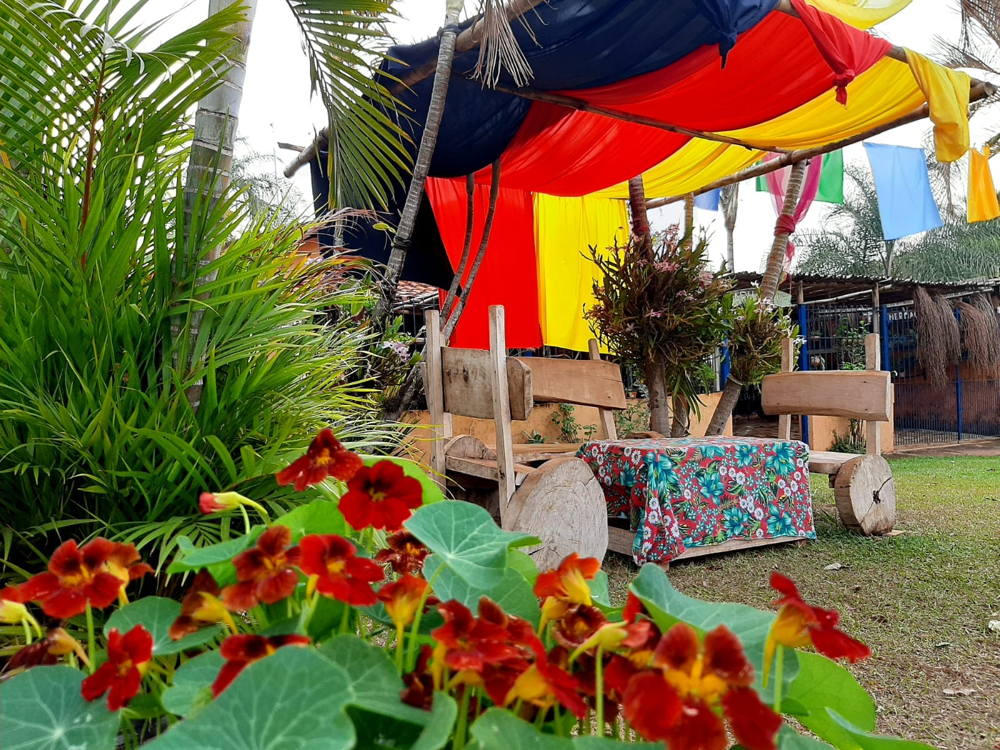
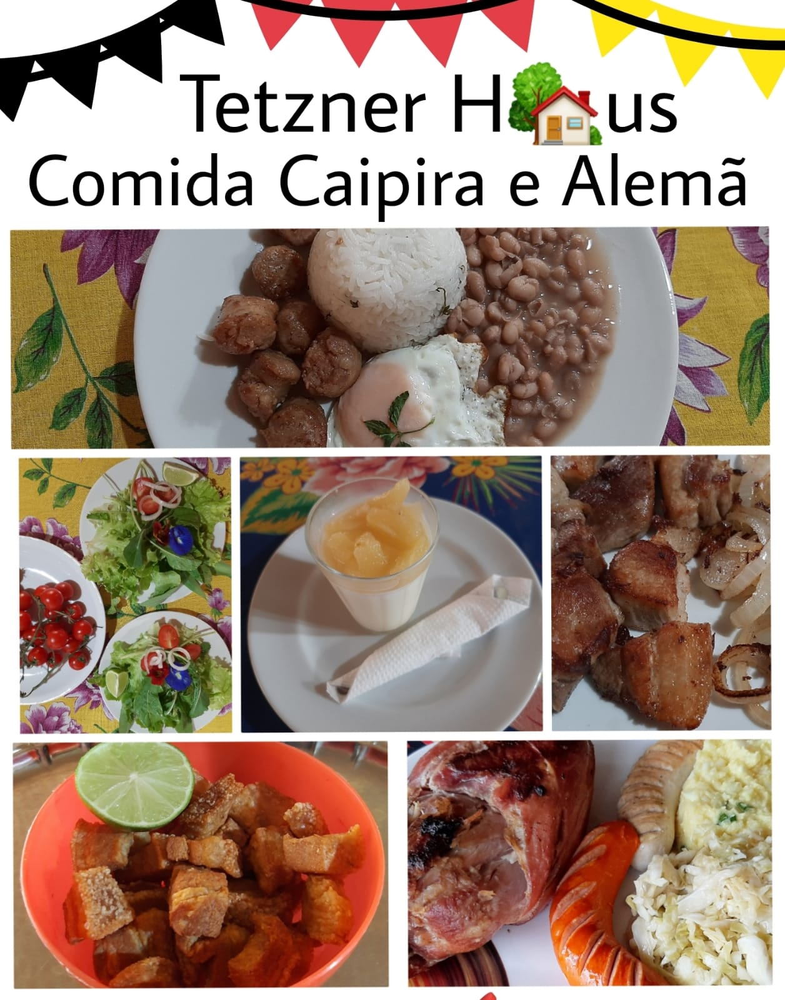

NOSSA HISTÓRIA
Somos a quarta geração de decendentes de imigrantes alemães, que migraram no Brasil em 1840, mais epecificamente em Limeira-SP e nosso bisavô "Henrich Tetzner" era um grande fazendeiro da época e possuia muitass terra entre os municipio de Cosmópolis e Limeira.

O bairro rual onde estamos localizados é chamado de Serra Velha, porque antigamente ali existia uma serralheria que era de nosso avô.
Foi por causa de nossa raiz cultural que decidimos abrir a nossa casa, para dividir com nossos clientes nossa historia e nossa cultura culinaria caipira e alemã.
ESPAÇO

Nosso Bar e Cozinha são abertos e os clientes tem a visão completa do nosso estabelicimento
Ambiente Rural, contamos com grande espaço aberto a sobra das árvores, espaço coberto e ventilado, Redário para um repouso apos o almoço, Estacionamento e WiFi para clientes
Nosso espaço musical vintage, com toca dico e uma variedade de mais de 200 titulos
Temos nosso cantinho da Oficina
Play Grouyd Rual, muita área aberta pra correr e árvores frutiferas, balaço e escorregador
Nosso Redário um espaço de descanso a sombra das árvores
CARDÁPIO
PORÇÔES
Carne de Lata - Torresmo - Linguiça Artesanal - Bolinhos - Mandioca - Fritas - Pururuca
PRATOS INDIVIDUAIS: Salada, Arroz, Feijão e duas opções de mistura (confirmar as opções do dia)<>
SOBREMESAS: Panna Cotta com geléias variádas, Apfelstrudel (torta de maça)
PRATOS ALEMÃES: EINSBEN (Joelho de porco), WEISSWURST Salsicha Branca, BOCKWURST (Salsicha Viena), SAUERKRAUT(Chucrute), KARTOFFELSALAT(Salada de Batata)
BEBIDAS: Variedade nas marcas de Cerveja, Nossa Cerveja Artesanal, Refrigerante, Sucos e Drinks Especiais Feitos com Cachaças Artesanais
LOCALIZAÇÃO
Endereço: Bairro Serra Velha, Sitio - Serra Velha, Limeira - SP, 13152-338
ACESSE NOSSAS REDES SOCIAIS: